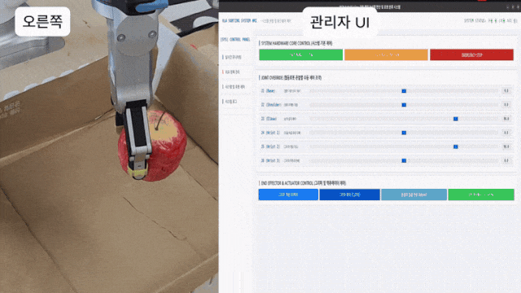
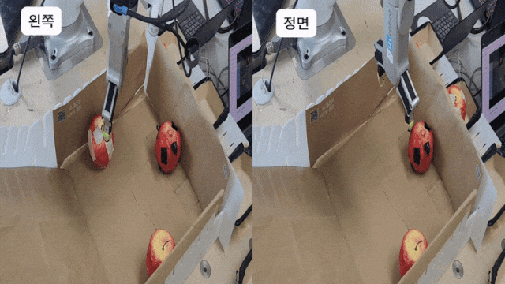
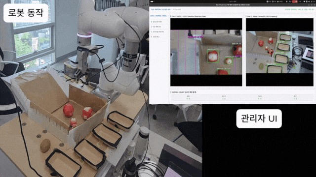
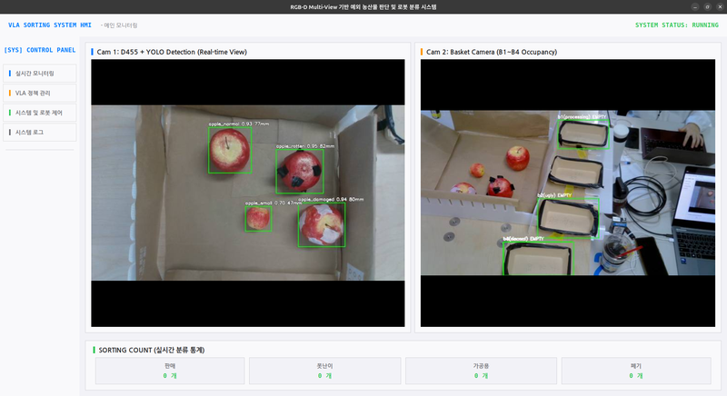
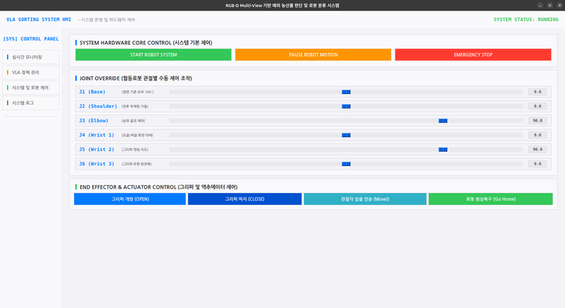
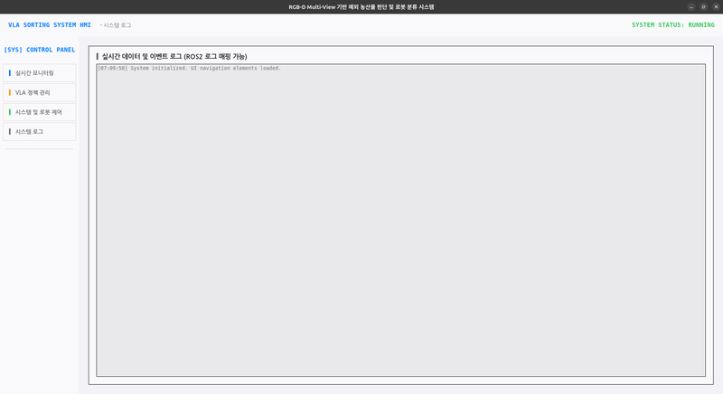
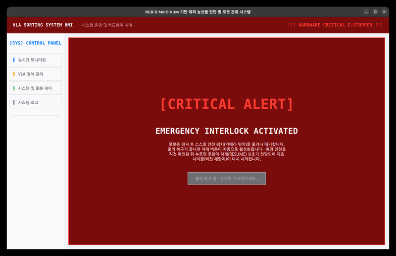
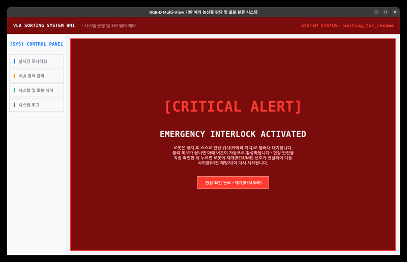

A Bayesian VLA-inspired collaborative apple-sorting robot that improves its autonomy through human feedback. It uses a human-in-the-loop approach, asking for help only when the situation is ambiguous.
I developed the gripping, movement, and safety-stop logic for a Doosan M0609 collaborative robot. This section covers three key issues identified through hands-on testing and how I resolved them.
Pressing E-STOP did not stop the robot immediately. It completed the current movement, gripping, or placement step before stopping, leaving a risk of collision.
I examined when and how often the stop signal was checked during each motion phase.
I continuously polled hardware status every 10 ms during movement and every 0.5 seconds during force-controlled gripping and placement. When a stop was detected, a stop event and the stop function were triggered together in a dual-stop structure.
The robot no longer had to finish its current motion phase: the stop took effect within 10 ms during movement and within 0.5 seconds during force control.

The gripper approached the apple vertically and in a straight line, colliding with the tray wall and risking damage to the robot and equipment.
I tested an angled approach based on the escape direction and rotation axis.
Hands-on testing revealed that the rotation-axis sign was reversed, so I corrected it and applied different tilt angles: 10° near walls and 22° near corners.
The gripper successfully approached without hitting walls or corners, and no further robot or equipment damage occurred.

The gripper initially applied a fixed, excessive force, causing the apples to become bruised or deformed.
I explored measuring a baseline force before gripping, then calculating the deviation and increasing force incrementally.
After measuring the baseline, the system increased force one step at a time—up to six steps—when the deviation exceeded 3.0 N, with a two-step safety margin to prevent slipping.
By applying only the minimum force needed, incrementally rather than using a fixed high force, the robot gripped apples securely without damaging them.

I designed and built an operator dashboard in Tkinter with four tabs and a sidebar, covering real-time monitoring, robot control, system logs, and emergency-stop screens.

Displays the Cam1 YOLO detection feed, the Cam2 basket feed, and counts for premium, imperfect, processing, and discarded apples.

Allows direct robot control using START, PAUSE, and E-STOP controls, along with J1–J6 joint sliders.

Records events in real time using color-coded logs: green for success, red for errors, and blue for information.

The entire screen turns red immediately, and all controls are disabled.

The RESUME button becomes available only after the physical recovery process is complete.
Challenges and solutions from designing and implementing the real-time operations dashboard and human-in-the-loop interface.
When E-STOP was pressed in the admin window, the robot stopped only after completing its current action rather than immediately.
I found that the E-STOP signal was waiting in the same thread as the main control loop.
I moved E-STOP signal reception to a dedicated thread so the signal could be received and acted on immediately, even while the robot was moving.
E-STOP now takes effect immediately at any point during operation.
Waiting for the server response before changing the screen created a delay during which the operator might not recognize the emergency.
I changed the flow so the client responds first while the server request runs separately in parallel.
On an E-STOP click, the screen turns red and tab navigation is blocked immediately, while the actual stop request is sent to the server in parallel via REST.
Operators can now recognize the emergency immediately, regardless of network latency.
Updating Tkinter widgets directly with WebSocket data received in a background thread could cause thread conflicts and crashes.
I adopted a queue-based approach: the background thread only enqueues messages, and the main thread processes them.
The background thread now only adds messages to a queue. The main thread updates the widgets every 100 ms using root.after().
This made widget updates thread-safe and enabled automatic reconnection every two seconds if the connection drops.